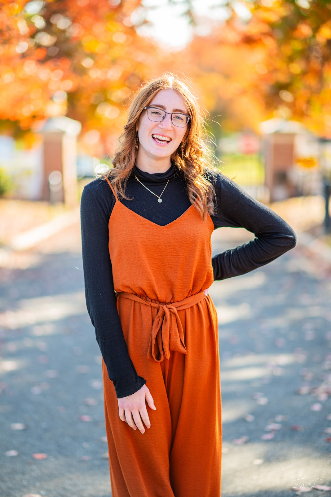

Student Journalist
I take photos and write about concerts in the DMV area and beyond for UMD’s campus radio station’s blog. So far, I have interviewed the band Couch regarding their newest EP.
As a freelancer for DC Music Review, I photograph and write about concerts in the DMV area. I communicate with bands’ PR teams and venues to acquire press passes to live shows. I usually take photos and write reviews of the concerts I attend, and I occasionally interview the artists before or after the show for promotions of their concerts and music.
I photograph campus events for UMD’s official social media and publications, including Maryland Today, Terp Magazine, and others. I also take photos for different university departments, including University Relations or the Office of the President. I use Photo Mechanic to incorporate metadata and practice organization of photos for our archives as well as do research on the university. Additionally, I learn and practice editing techniques using a variety of software, including Photoshop Lightroom, and Lightroom Classic.
I photograph campus events weekly and capture sports. I write captions for photos and sections within the yearbook, and I write brief descriptions of major news events–both local and global–that occurred during the school year.
I photographed and documented local and campus events and sports for the university’s oldest student newspaper. My photographs appeared in 68 articles in news, sports, and diversions sections. Additionally, I wrote six articles published in varying styles and sections, including two celebrity interviews.
I photographed campus events for this online student publication and wrote two articles while on the staff. I still freelance for them as well, typically contributing photo stories about events that receive little coverage.
In high school, I anchored, contributed to the production team, and produced video packages for North Allegheny Senior High School’s morning announcements and accompanying news outlet, "The NASH Uproar."
I photographed school events for North Allegheny Senior High School’s online newspaper, compiling 105 photo credits. I wrote and produced 64 articles and videos. We were the second high school in the country to achieve SNO (Student Newspapers Online) Distinguished Site status in the 2021-2022 school year; five personal Best of SNO Awards. I was also the paper’s first ever Junior Photography Editor in my junior year, before completing my high school education as the Senior Photography Editor and Senior Staff Writer.
I wrote and produced 12 articles and videos for the international Jewish youth organization BBYO’s international newsletter. I was also a photographer and videographer for BBYO’s International Convention in 2021 (virtual) and 2022 in Baltimore, Maryland. I interviewed Rabbi Angela Buchdal on camera for BBYO Insider’s YouTube livestream of the convention in Baltimore.